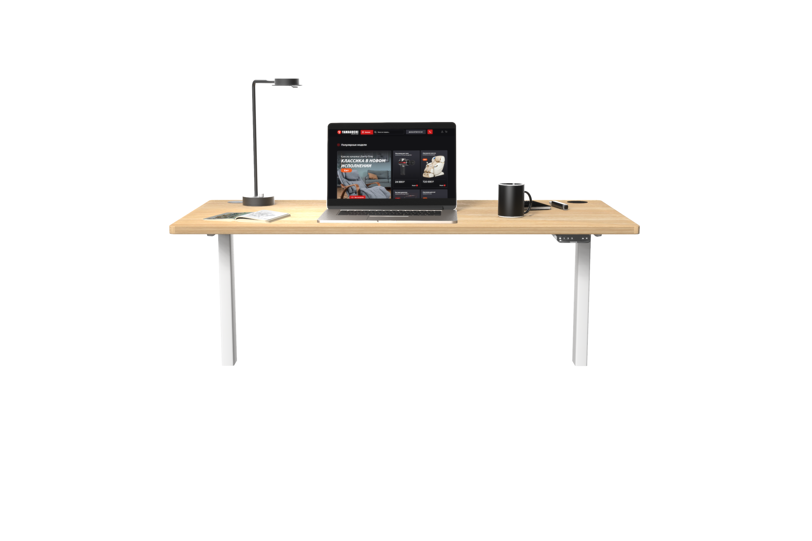
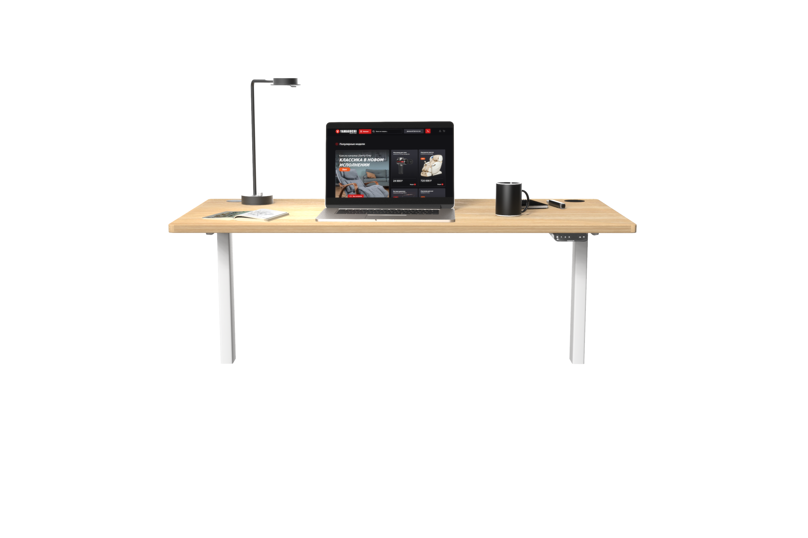

Эргономика — ключ к успеху современного человека
Cтильная столешница , выполненной из экологически безопасного материала (ДСП), и усиленной стальной рамы не составит труда разместить на поверхности инновационного стола большое количество крупногабаритной техники: стол выдерживает нагрузку до 80 кг.
Также столешница, обладающая меламиновым покрытием, хорошо переносит механические воздействия (царапины или удары), при контакте с водой не разрушается, устойчиво переносит бытовые химические вещества и не выгорает под воздействием ультрафиолета.
 

Yamaguchi Voice Control
Вы можете управлять программами массажа или самим креслом с помощью голосовых команд, приведённых ниже. Коснитесь кратковременно кнопки голосового управления, расположенной на левом подлокотнике, для запуска сеанса голосового управления.
Произнесите одну из доступных команд. Если произнесённая команда распознана, вы услышите ответ и кресло приступит к выполнению запроса.
скажи:
«окей, ямагучи»